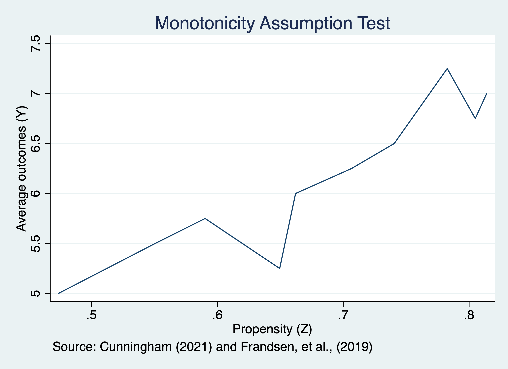

Chapter 1 Instrumental Variables
In-depth, institutional knowledge of programs, treatment, interventions provide some of the best sources of strong instruments (Angrist and Krueger, 2001)
We are going to estimate the marginal impact of going to college for those who comply with the instrument.
\[ \delta^{IV}_{LATE}=\frac{E[Y_i(D^1_i,1)-Y_i(D^0_i,0)]}{E[D^1_i-D^0_i]}=E[Y^1_i-Y^0_i|D^1_i-D^0_i=1]\]
1.1 Naive OLS
We will use a naive OLS to estimate the marginal effect of college on wages. We expect this to be upwards biased.
First, we will import our data from Card via Cunningham
\[ ln(wages_i)= \beta_0 + \beta_1 edu_i + \beta_2 expr_i + \beta_3 Black_i + \beta_4 South_i + \beta_5 married_i + a_i + \varepsilon_i \]
Where \(a_i\) are controls for metropolitian statistical areas.
Source | SS df MS Number of obs = 3,003
-------------+---------------------------------- F(6, 2996) = 219.15
Model | 180.255137 6 30.0425229 Prob > F = 0.0000
Residual | 410.705979 2,996 .137084773 R-squared = 0.3050
-------------+---------------------------------- Adj R-squared = 0.3036
Total | 590.961117 3,002 .196855802 Root MSE = .37025
------------------------------------------------------------------------------
lwage | Coef. Std. Err. t P>|t| [95% Conf. Interval]
-------------+----------------------------------------------------------------
educ | .0711729 .0034824 20.44 0.000 .0643447 .078001
exper | .0341518 .0022144 15.42 0.000 .0298098 .0384938
black | -.1660274 .0176137 -9.43 0.000 -.2005636 -.1314913
south | -.1315518 .0149691 -8.79 0.000 -.1609024 -.1022011
married | -.0358707 .0034012 -10.55 0.000 -.0425396 -.0292019
1.smsa | .1757871 .0154578 11.37 0.000 .1454782 .2060961
_cons | 5.063317 .0637402 79.44 0.000 4.938338 5.188296
------------------------------------------------------------------------------We find that our \(\hat{\beta_1}=0.0711\) and our interpretation is that college increases wages by \((e^{0.0711}-1)*100\%=7.3\%\)
1.2 Estimate Local Average Treatment Effect using IV
Next, we will use our instrument variable estimator to estimate the \(LATE\) for those who comply with the instrument. We will use the ivregress 2sls command.
Our instrument is a binary if being in a county near a 4-year college.
Our first stage is: \[ educ_i=\pi_0 + \pi_1 nearc4_i + \pi_2 expr_i + \pi_3 Black_i + \pi_4 South + \pi_5 married + \pi_6 metro_i + \eta_i \] Our second state is: \[ ln(wages_i)= \beta_0 + \beta_1 \widehat{edu}_i + \beta_2 expr_i + \beta_3 Black_i + \beta_4 South_i + \beta_5 married_i + \beta_6 metro_i + \varepsilon_i \]
First-stage regressions
-----------------------
Number of obs = 3,003
F( 6, 2996) = 456.14
Prob > F = 0.0000
R-squared = 0.4774
Adj R-squared = 0.4764
Root MSE = 1.9373
------------------------------------------------------------------------------
educ | Coef. Std. Err. t P>|t| [95% Conf. Interval]
-------------+----------------------------------------------------------------
exper | -.404434 .0089402 -45.24 0.000 -.4219636 -.3869044
black | -.9475281 .0905256 -10.47 0.000 -1.125027 -.7700295
south | -.2973528 .0790643 -3.76 0.000 -.4523787 -.1423269
married | -.0726936 .0177473 -4.10 0.000 -.1074918 -.0378954
1.smsa | .4208945 .084868 4.96 0.000 .2544891 .5873
nearc4 | .3272826 .0824239 3.97 0.000 .1656695 .4888957
_cons | 16.8307 .1307475 128.73 0.000 16.57433 17.08706
------------------------------------------------------------------------------
Instrumental variables (2SLS) regression Number of obs = 3,003
Wald chi2(6) = 840.98
Prob > chi2 = 0.0000
R-squared = 0.2513
Root MSE = .38384
------------------------------------------------------------------------------
lwage | Coef. Std. Err. z P>|z| [95% Conf. Interval]
-------------+----------------------------------------------------------------
educ | .1241642 .0498975 2.49 0.013 .0263668 .2219616
exper | .0555882 .0202624 2.74 0.006 .0158746 .0953019
black | -.1156855 .0506823 -2.28 0.022 -.2150211 -.01635
south | -.1131647 .0232168 -4.87 0.000 -.1586687 -.0676607
married | -.0319754 .005081 -6.29 0.000 -.0419339 -.0220169
1.smsa | .1477065 .0308591 4.79 0.000 .0872237 .2081893
_cons | 4.162476 .8485997 4.91 0.000 2.499251 5.825701
------------------------------------------------------------------------------
Instrumented: educ
Instruments: exper black south married 1.smsa nearc4Our 2SLS estimate of the LATE is 13.5%. Being near a college increases the wages by \((e^{0.124}-1)*100\%=13.5\%\) for compliers.
1.3 Test Instrument Relevance
We will first test our instrument relevance assumption. This should be familiar from Econ 645. We will estimate the first stage by itself and then use an \(F\)-Test.
\[ educ_i=\pi_0 + \pi_1 nearc4_i + \pi_2 expr_i + \pi_3 Black_i + \pi_4 South + \pi_5 married + \pi_6 metro_i + \eta_i \]
Source | SS df MS Number of obs = 3,003
-------------+---------------------------------- F(6, 2996) = 456.14
Model | 10272.0963 6 1712.01605 Prob > F = 0.0000
Residual | 11244.7835 2,996 3.75326552 R-squared = 0.4774
-------------+---------------------------------- Adj R-squared = 0.4764
Total | 21516.8798 3,002 7.16751492 Root MSE = 1.9373
------------------------------------------------------------------------------
educ | Coef. Std. Err. t P>|t| [95% Conf. Interval]
-------------+----------------------------------------------------------------
nearc4 | .3272826 .0824239 3.97 0.000 .1656695 .4888957
exper | -.404434 .0089402 -45.24 0.000 -.4219636 -.3869044
black | -.9475281 .0905256 -10.47 0.000 -1.125027 -.7700295
south | -.2973528 .0790643 -3.76 0.000 -.4523787 -.1423269
married | -.0726936 .0177473 -4.10 0.000 -.1074918 -.0378954
1.smsa | .4208945 .084868 4.96 0.000 .2544891 .5873
_cons | 16.8307 .1307475 128.73 0.000 16.57433 17.08706
------------------------------------------------------------------------------Being in a county near a college is associated with a 0.32 increase in years of education.
Next, we will use an \(F\)-test on the excludability of college in the county from the first stage regression.
( 1) nearc4 = 0
F( 1, 2996) = 15.77
Prob > F = 0.0001The \(F\)-statistic is 15.767 which is indicative of a good instrument
1.4 Test Monotonicity
We will now test the monotonicity assumption of the IV. First, we will rerun the first stage regression and predict education.
Next, we will average outcomes across dhat by using the egen cut to get bins of outcomes
sum lwage, detail
egen lwage_bins = cut(lwage), at(5,5.25,5.5,5.75,6,6.25,6.5,6.75,7,7.25,7.5)
sort lwage_bins
by lwage_bins: egen mean_z=mean(nearc4)Now we will graph the monotonicity assumption.

It is possible that monotonicity assumption is violated.